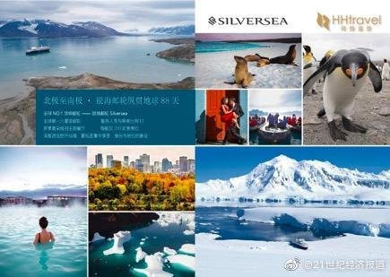

羡慕。有孩子，没法环游世界……@21世纪经济报道:【花百万环游世界的是哪些人？大数据告诉你61%是高收入女性】 奢游客群从曾经占比最大的45-55岁、夫妻、一线城市成功企业家，转变为30-50岁、单身、事业有成企业高管等，其中不乏旅居海外的华人。另外，男女比例以57：43变为39：61。#资金在手说走就走# #但还是要先上班#花百万环游世界的是哪些人？大数据告诉你61%是高收入女性 

 花百万环游世界的是哪些人？大数据告诉你61%是高收入女性
花百万环游世界的是哪些人？大数据告诉你61%是高收入女性